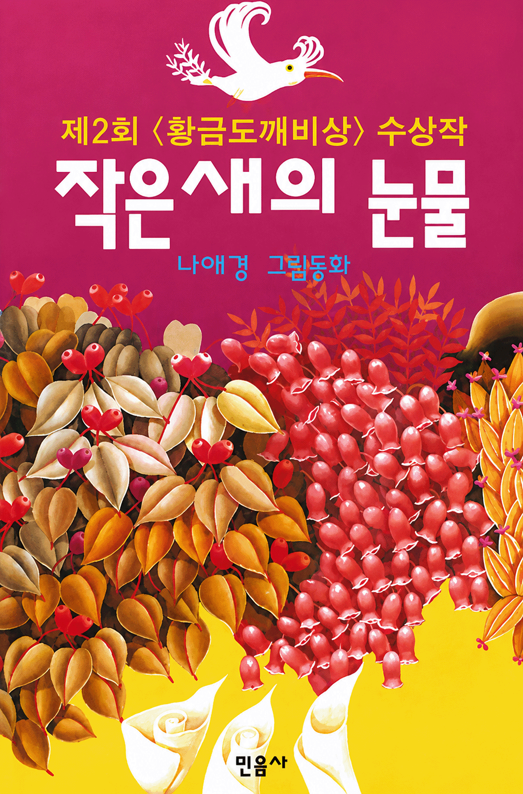
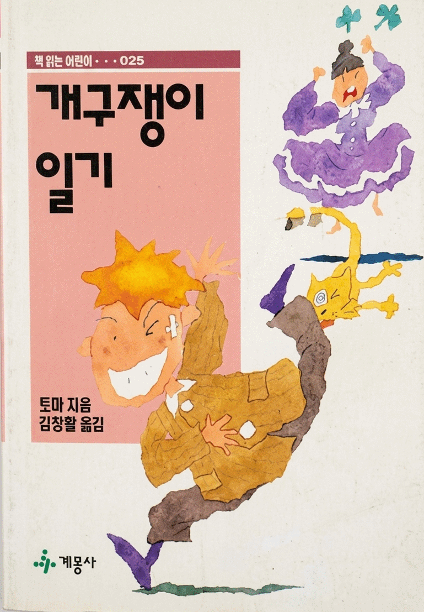
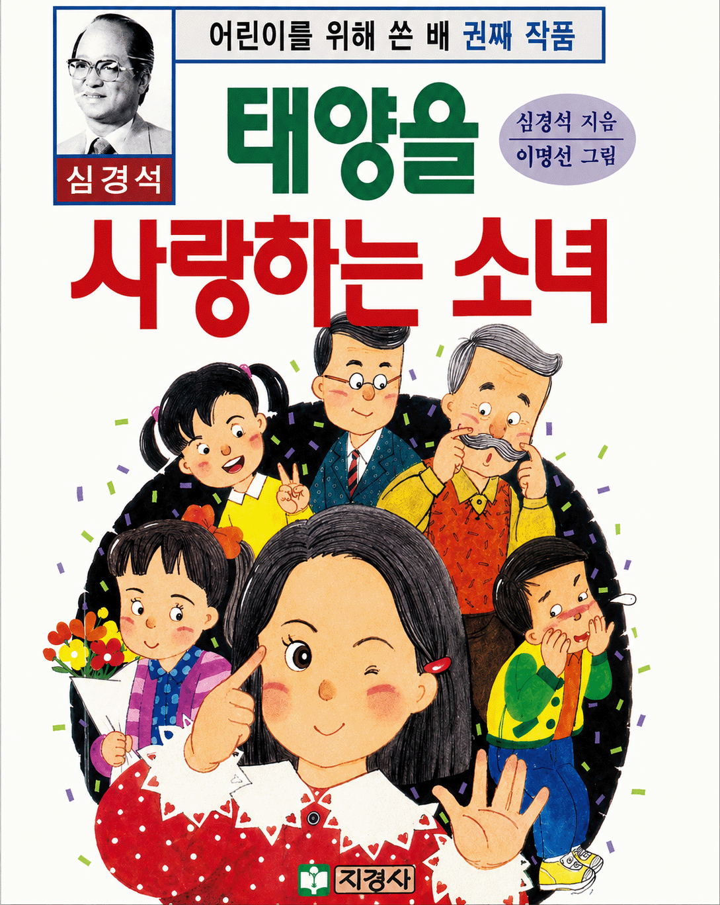
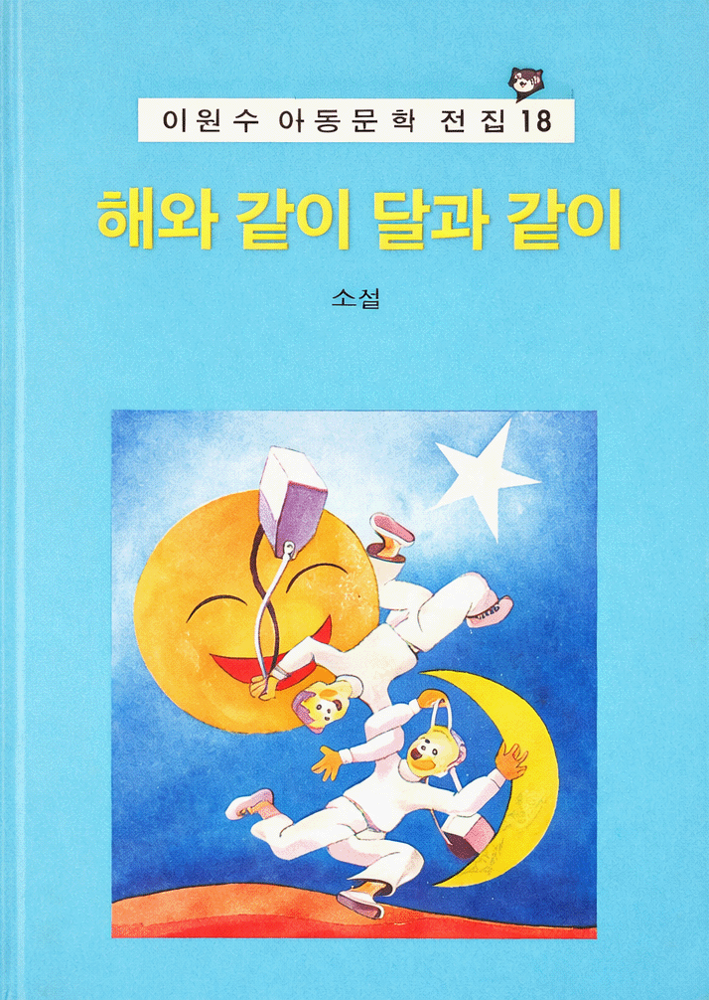
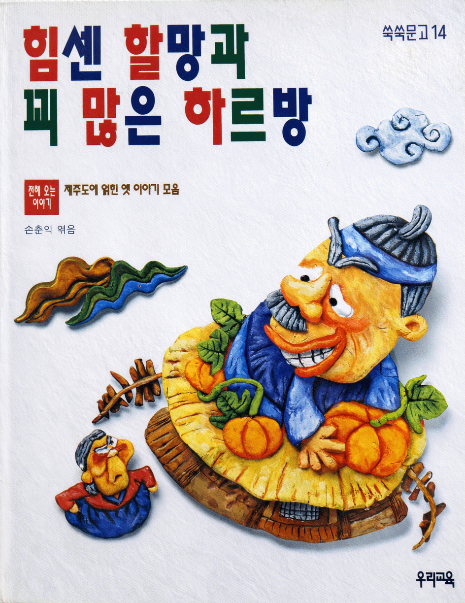
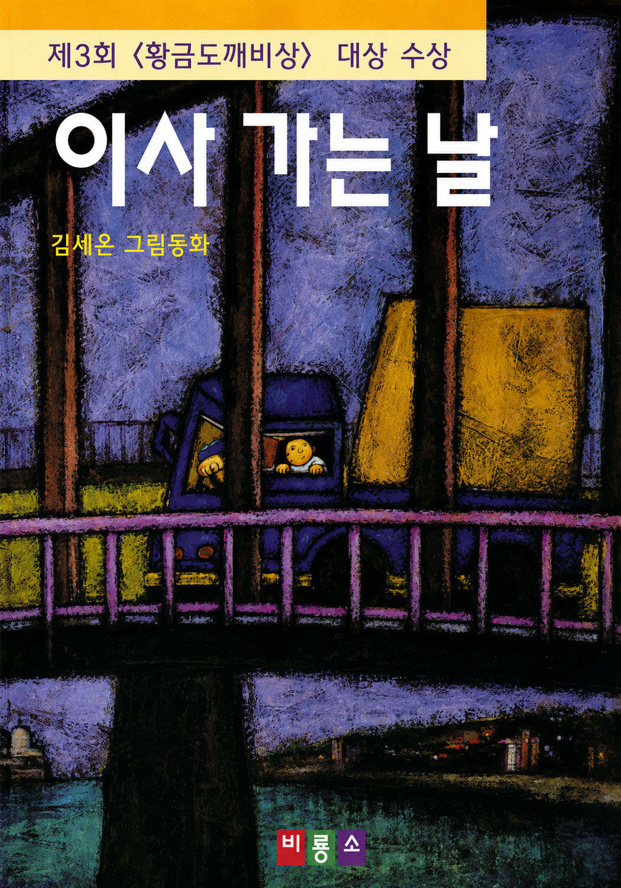
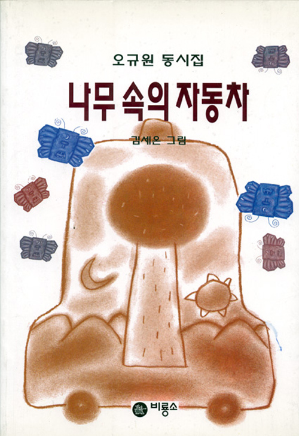
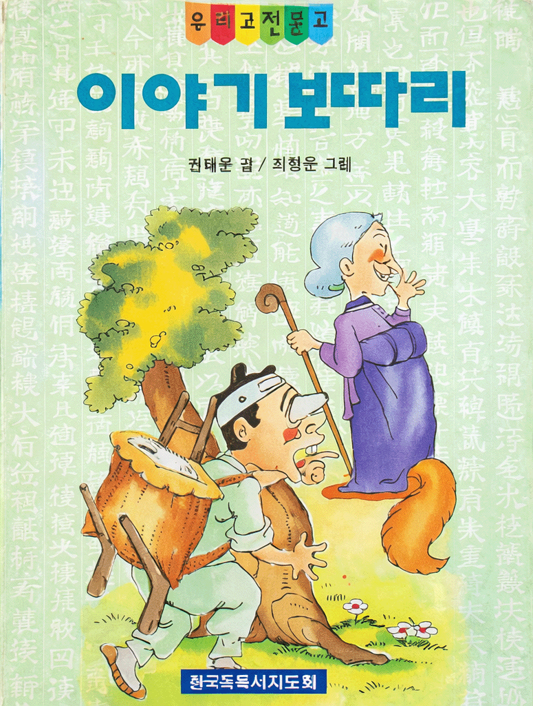
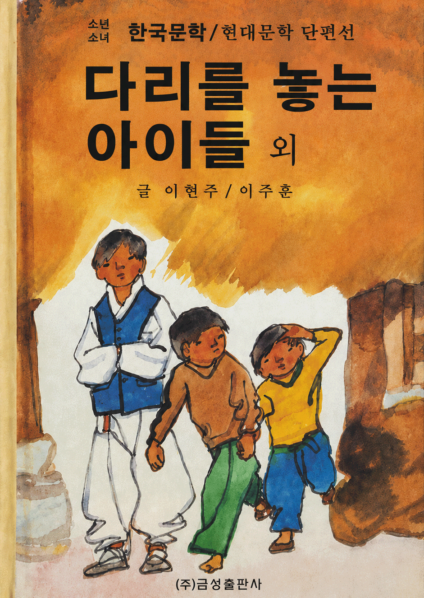
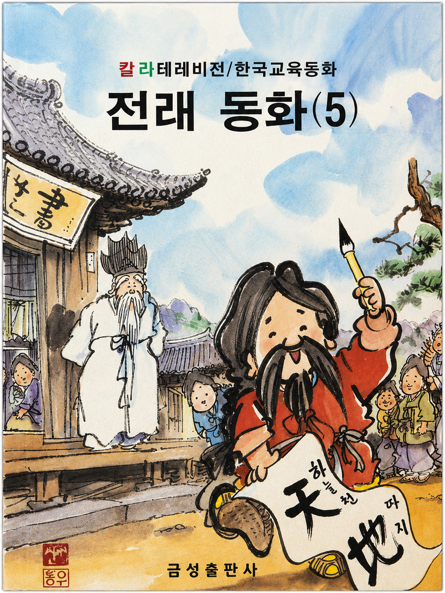

글,그림 나애경
출판사 : 민음사
출간일 : 1993년 5월 20일
사진 출처 : 비룡소_작은 새의 눈물

글 토마 / 옮긴이 김창활
출판사 : 계몽사
출간일 : 1993년 8월 1일
사진 출처 : 카페24_6080추억상회_개구쟁이 일기

글 심경석 / 그림 이명선
출판사 : 지경사
출간일 : 1992년 2월 10일
사진 출처 : 세이북_추억의 책)태양을 사랑하는 소녀-심경석 장편아동소설

글 이완수
출판사 : 웅진출판주식회사
출간일 : 1990년 1월 20일
사진 출처 : 카페24_6080추억상회_해와 같이 달과 같이

글 손춘익
출판사 : 우리교육
출간일 : 1997년 4월 21일
사진 출처 : 옛날물건 홈펭이지_1997년 손춘익 엮음 힘센 할망과 꾀 많은 하르방

글,그림 김세온
출판사 : 비룡소
출간일 : 1994년 10월 10일
사진 출처 : 비룡소_이사 가는

글 오규원 / 그림 김세온
출판사 : 비룡소
출간일 : 1995년 1월 10일
사진 출처 : 비룡소 _나무 속의 자동차

글 권태문 / 그림 최병윤
출판사 : 한국독서지도회
출간일 : 1998년 3월 25일
사진 출처 : 카페24_6080추억상회_이야기 보따리

글 이현주,이주훈
출판사 : 금성출판사
출간일 : 1994년 1월 10일
사진 출처 : 세이북_금성 소년소녀 현대문학 단편 12)다리를 놓는 아이들 외

글 박홍근 / 그림 신동우 외
출판사 : 금성출판사
출간일 : 1982년 11월 15일
사진 출처 : 세이북_금성 칼라텔레비젼 한국교육동화 5) 전래동화 5 (신동우 화백의 삽화 외) 1982년판